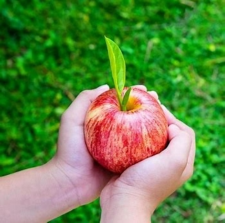

La manzana es aquella fruta comestible que se recolecta de un árbol frutal usualmente denominado manzano, el cual forma parte de la familia de las Rosáceas y a la especie Malus domestica. Es una fruta pomácea de una forma casi esférica, ya que es deprimido en la parte superior y en la base, cuya piel es de color verde, amarilla o de color rojo, y de un sabor practicamente dulce, aunque esto generalmente depende de la variedad del fruto.
🍎
Al igual que la mayoría de frutas, el componente principal es el agua, en un 85%. El componente principal de la manzana es el agua, ya que se encuentra en un 85% aproximadamente. Posee altas cantidades de fibra, potasio, ácido fólico, calcio, vitaminas A, C y del complejo vitamínico B.

sus
Propiedades
💡La manzana posee una fuente discreta de Vitamina E o tocoferol, la cual aporta una acción antioxidante, interviniendo en la estabilidad de las células sanguíneas como los glóbulos rojos y en la fertilidad, y posee una escasa cantidad de Vitamina C. Del mismo modo, se pueden encontrar complejos vitamínicos del grupo B como la B1, B2 y B6.
2
3
su
Historia
Los manzanos son originarios de Asia Central, específicamente de los bosques de la cordillera Tian Shan, en la frontera entre las actuales China, Kazajistán y Kirguistán. Una tradición túrquica dice que la manzana proviene de la zona de Almá-Atá o Almatý, antigua capital de Kazajistán, cuyo nombre es la forma adjetivada del sustantivo «manzana» en kazajo.

.png "Manzana")